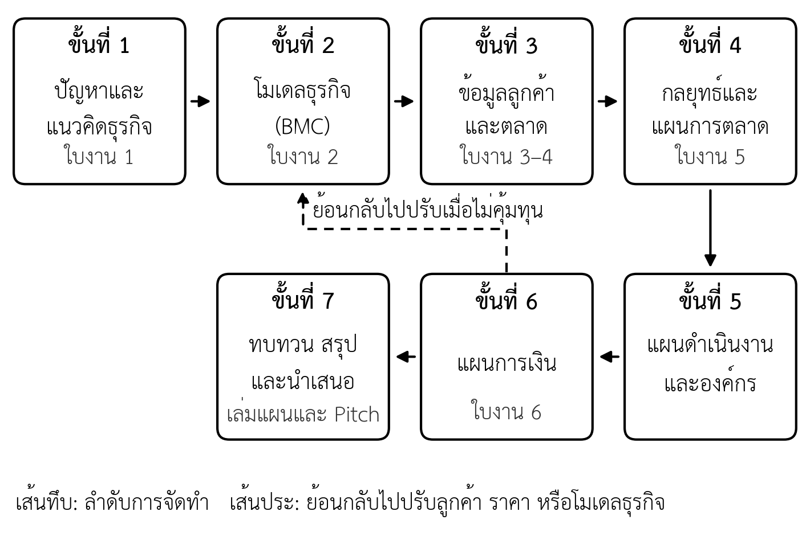

- อธิบายความหมายและประโยชน์ของแผนธุรกิจทั้งต่อผู้ประกอบการและผู้อ่านภายนอกได้
- สรุปหลักฐานจากงานวิจัยเกี่ยวกับประโยชน์ของการวางแผนธุรกิจได้
- จำแนกผู้อ่านแผนธุรกิจแต่ละกลุ่ม และระบุสิ่งที่แต่ละกลุ่มพิจารณาได้
- เปรียบเทียบแผนธุรกิจสำหรับธุรกิจใหม่กับธุรกิจที่ดำเนินการอยู่ได้
- ระบุองค์ประกอบของแผนธุรกิจฉบับสมบูรณ์และลำดับขั้นตอนการจัดทำได้
- อธิบายความต่างระหว่างเป้าหมายกับวิธีการ และคำนวณย้อนกลับจากเป้าหมายยอดขายได้
- ระบุหลักจรรยาบรรณในการจัดทำและนำเสนอแผนธุรกิจได้
- เขียนข้อความปัญหา แนวคิดธุรกิจ และเป้าหมายปลายทางเบื้องต้นของกลุ่มได้ (ใบงานที่ 1)
ความนำ
คนจำนวนมากเริ่มธุรกิจจากความรู้สึกว่า "ไอเดียนี้น่าจะขายได้" แต่ความรู้สึกนั้นยังไม่ใช่หลักฐาน ระหว่างไอเดียกับธุรกิจที่อยู่รอดได้มีคำถามอีกมากที่ต้องตอบ ใครคือลูกค้า ลูกค้ามีมากพอหรือไม่ จะผลิตและส่งมอบอย่างไร ต้องใช้เงินเท่าไร และเมื่อใดจะคุ้มทุน แผนธุรกิจคือเครื่องมือที่บังคับให้ผู้ประกอบการตอบคำถามเหล่านี้อย่างเป็นระบบก่อนนำเงินและเวลาไปเสี่ยงจริง และเป็นเอกสารที่ใช้สื่อสารคำตอบนั้นกับคนที่ผู้ประกอบการต้องการความร่วมมือ ทั้งธนาคาร ผู้ลงทุน หุ้นส่วน และทีมงาน
รายวิชานี้ใช้โจทย์เดียวเดินเรื่องตลอดภาคการศึกษา คือ "ถ้าร้านหมูปิ้งหน้าโรงเรียนจะขายให้ได้วันละ 3 ล้านบาท แผนธุรกิจต้องเป็นอย่างไร" เป้าหมายนี้ฟังดูเป็นไปไม่ได้สำหรับร้านที่ขายวันละไม่กี่พันบาท แต่โจทย์นี้ไม่ได้ถามว่าเป้าหมายใหญ่พอหรือไม่ โจทย์ถามว่าจะไปถึงได้อย่างไร เพราะเป้าหมายคือสิ่งที่ต้องการ แต่วิธีการไปถึงเป้าหมายคือสิ่งสำคัญ และวิธีการนั้นคือเนื้อหาของแผนธุรกิจ
บทนี้วางพื้นฐานของรายวิชาทั้งหมด เริ่มจากความหมายและประโยชน์ของแผนธุรกิจ หลักฐานจากงานวิจัยว่าการวางแผนช่วยให้ธุรกิจดีขึ้นจริงหรือไม่ ผู้อ่านแผนแต่ละกลุ่มมองหาอะไร ความแตกต่างระหว่างแผนของธุรกิจใหม่กับธุรกิจที่ดำเนินการอยู่ รูปแบบและองค์ประกอบของแผน กระบวนการจัดทำ และข้อผิดพลาดที่พบบ่อย จากนั้นจึงตั้งโจทย์ของรายวิชาด้วยการคำนวณย้อนกลับจากเป้าหมาย และปิดด้วยจรรยาบรรณที่ผู้จัดทำแผนต้องยึดถือ ท้ายบทมีกรณีศึกษาสมมติ "หมูปิ้งอาจารย์ตั้ม" ซึ่งจะเดินเรื่องต่อเนื่องทุกบท
1.1 ความหมายของแผนธุรกิจ
แผนธุรกิจ (business plan) คือเอกสารที่อธิบายว่าธุรกิจจะสร้างคุณค่าให้ลูกค้ากลุ่มใด ด้วยวิธีใด ภายใต้สภาพตลาดและการแข่งขันแบบใด ต้องใช้ทรัพยากรอะไรบ้าง และจะสร้างรายได้และกำไรได้อย่างไรในช่วงเวลาที่กำหนด แผนธุรกิจจึงไม่ใช่เพียงเอกสารบรรยายความตั้งใจ แต่เป็นชุดของการตัดสินใจที่เชื่อมโยงกัน ตั้งแต่การเลือกลูกค้า การกำหนดราคา ไปจนถึงตัวเลขทางการเงิน
แผนธุรกิจที่ดีมีลักษณะสำคัญสามประการ ประการแรก แผนต้องตั้งอยู่บนข้อมูล ผู้อ่านต้องแยกได้ว่าข้อความใดเป็นข้อเท็จจริง (fact) ที่มีหลักฐาน และข้อความใดเป็นข้อสมมติ (assumption) ที่ยังต้องพิสูจน์ ประการที่สอง ทุกส่วนของแผนต้องสอดคล้องกัน ยอดขายที่ประมาณในแผนการตลาดต้องเป็นตัวเลขเดียวกับรายได้ในแผนการเงิน และกำลังการผลิตในแผนการดำเนินงานต้องรองรับยอดขายนั้นได้ ประการที่สาม แผนต้องเขียนให้ผู้อ่านเป้าหมายตัดสินใจได้ ผู้อ่านแต่ละกลุ่มมีคำถามต่างกัน แผนที่ดีจึงตอบคำถามสำคัญของผู้อ่านได้ครบโดยไม่ต้องให้ผู้อ่านเดาเอง
Sahlman (1997) เสนอว่าแผนธุรกิจที่ดีควรตอบคำถามเกี่ยวกับปัจจัยสี่ด้านที่พึ่งพากัน ได้แก่ ทีมงาน โอกาสทางธุรกิจ บริบทแวดล้อม และความเสี่ยงกับผลตอบแทน และเห็นว่าแผนจำนวนมากใช้เนื้อที่กับตัวเลขประมาณการมากเกินไป แต่ให้ข้อมูลที่ผู้ลงทุนต้องการจริงน้อยเกินไป ข้อสังเกตนี้เป็นหลักคิดสำคัญของรายวิชา ตัวเลขทางการเงินจะน่าเชื่อถือก็ต่อเมื่อข้อสมมติเบื้องหลังตัวเลขน่าเชื่อถือ
1.2 ประโยชน์ของแผนธุรกิจ
ประโยชน์ของแผนธุรกิจแบ่งได้เป็นสองด้าน คือประโยชน์ภายในต่อผู้ประกอบการและทีม และประโยชน์ภายนอกในการสื่อสารกับผู้ที่ธุรกิจต้องการความร่วมมือ
1.2.1 ประโยชน์ภายใน
ประโยชน์ภายในมีอย่างน้อยสี่ประการ ประการแรก การเขียนแผนบังคับให้คิดอย่างเป็นระบบ ผู้ประกอบการที่ไม่เคยเขียนแผนมักพบว่ามีคำถามสำคัญที่ตนยังไม่เคยคิด เช่น ลูกค้าจะรู้จักร้านได้อย่างไร หรือต้องมีเงินสำรองกี่เดือนก่อนรายได้จะครอบคลุมค่าใช้จ่าย ประการที่สอง แผนช่วยทดสอบความเป็นไปได้บนกระดาษก่อนลงทุนจริง ความผิดพลาดที่พบบนกระดาษมีต้นทุนต่ำกว่าความผิดพลาดที่พบหลังเปิดร้านมาก ประการที่สาม แผนทำให้ทีมเห็นภาพเดียวกัน เมื่อหุ้นส่วนมีเป้าหมาย ลำดับความสำคัญ และตัวเลขชุดเดียวกัน ความขัดแย้งในภายหลังจะลดลง ประการที่สี่ แผนเป็นเกณฑ์สำหรับติดตามผล เมื่อธุรกิจดำเนินไป ผู้ประกอบการสามารถเทียบผลจริงกับแผนเพื่อดูว่าข้อสมมติใดผิดและต้องปรับอะไร
1.2.2 ประโยชน์ภายนอก
ประโยชน์ภายนอกเกิดขึ้นเมื่อแผนธุรกิจถูกใช้สื่อสารกับผู้อื่น ได้แก่ การขอสินเชื่อจากธนาคาร การระดมทุนจากผู้ลงทุน การขอทุนสนับสนุนจากหน่วยงานรัฐหรือการเข้าร่วมโครงการบ่มเพาะธุรกิจ การเจรจากับคู่ค้าหรือผู้จัดหาวัตถุดิบรายใหญ่ และการชักชวนบุคลากรที่มีความสามารถให้มาร่วมงาน ในทุกกรณี แผนธุรกิจทำหน้าที่ลดความไม่แน่นอนของผู้อ่าน ผู้อ่านที่เข้าใจธุรกิจมากขึ้นย่อมตัดสินใจร่วมมือได้ง่ายขึ้น
1.3 การวางแผนช่วยให้ธุรกิจดีขึ้นจริงหรือไม่
มีข้อถกเถียงมานานว่าการเขียนแผนธุรกิจคุ้มค่าหรือไม่ ฝ่ายหนึ่งเห็นว่าแผนช่วยลดความผิดพลาด อีกฝ่ายเห็นว่าธุรกิจใหม่ไม่แน่นอนเกินกว่าจะวางแผนได้ และควรใช้เวลาไปทดลองกับลูกค้าจริงมากกว่า งานวิจัยให้คำตอบที่อยู่ตรงกลาง (ตารางที่ 1.1) การวิเคราะห์อภิมานงานวิจัยจำนวนมากพบว่าโดยรวมการวางแผนเป็นประโยชน์ต่อธุรกิจขนาดเล็ก แต่ประโยชน์แตกต่างกันตามความใหม่ของกิจการและวัฒนธรรม ผู้วิจัยจึงเสนอให้วางแผนควบคู่กับการเรียนรู้อย่างต่อเนื่อง (Brinckmann et al., 2010) ส่วนการระดมทุนจากผู้ลงทุนร่วม พบว่าตัวเอกสารแผนธุรกิจสัมพันธ์กับการตัดสินใจให้ทุนเพียงเล็กน้อย เพราะผู้ลงทุนได้ข้อมูลสำคัญจากช่องทางอื่น เช่น การพบทีมผู้ก่อตั้ง (Kirsch et al., 2009)
ตารางที่ 1.1 สรุปหลักฐานจากงานวิจัยเกี่ยวกับการวางแผนธุรกิจ
| งานวิจัย | กลุ่มที่ศึกษา | ข้อค้นพบหลัก |
|---|---|---|
| Delmar และ Shane (2003) | กิจการใหม่ 223 รายในสวีเดน | การวางแผนลดโอกาสล้มเลิกกิจการ และเร่งการพัฒนาผลิตภัณฑ์และการจัดตั้งองค์กร |
| Honig และ Karlsson (2004) | ผู้ประกอบการระยะเริ่มต้น 396 ราย ติดตาม 2 ปี | ไม่พบว่ากิจการที่เขียนแผนมีกำไรสูงกว่า |
| Hopp และคณะ (2018) | วิเคราะห์ข้อมูลชุดเดียวกับ Honig และ Karlsson ซ้ำ | การวางแผนส่งผลต่อการอยู่รอด แต่ไม่ส่งผลต่อกำไร |
| Kirsch และคณะ (2009) | คำขอรับเงินทุนจากผู้ลงทุนร่วมยุคดอทคอม | เอกสารแผนธุรกิจสัมพันธ์กับการตัดสินใจให้ทุนเพียงเล็กน้อย |
| Brinckmann และคณะ (2010) | การวิเคราะห์อภิมานงานวิจัยธุรกิจขนาดเล็ก | การวางแผนเป็นประโยชน์โดยรวม แต่แตกต่างตามความใหม่ของกิจการและวัฒนธรรม |
สองแถวกลางของตารางให้บทเรียนเพิ่มเติม ข้อมูลชุดเดียวกันเมื่อวิเคราะห์ซ้ำอาจให้ข้อสรุปต่างไป ข้อค้นพบจากงานวิจัยชิ้นเดียวจึงต้องอ่านอย่างระมัดระวัง ข้อสรุปสำหรับรายวิชานี้คือ การวางแผนมีประโยชน์เมื่อทำเพื่อคิดให้ชัดและทดสอบข้อสมมติ ไม่ใช่ทำเพื่อให้มีเอกสารครบตามแบบฟอร์ม แผนที่ดีจึงเป็นเอกสารที่ปรับได้เมื่อได้ข้อมูลใหม่ สอดคล้องกับแนวทางสตาร์ตอัปแบบลีน (lean startup) ที่เน้นวงจรสร้าง วัดผล และเรียนรู้ เพื่อทดสอบข้อสมมติกับลูกค้าจริงอย่างรวดเร็ว (Ries, 2011)
1.4 ผู้อ่านแผนธุรกิจและสิ่งที่แต่ละกลุ่มต้องการ
แผนธุรกิจฉบับเดียวกันอาจถูกอ่านโดยคนหลายกลุ่ม แต่ละกลุ่มให้สิ่งที่ต่างกันแก่ธุรกิจและมีคำถามต่างกัน (ตารางที่ 1.2) ผู้ประกอบการและทีมเป็นผู้อ่านกลุ่มแรกที่ใช้แผนตกลงทิศทางและติดตามผล หน่วยงานให้ทุนและโครงการบ่มเพาะมักมีแบบฟอร์มและเกณฑ์ของตนเอง ส่วนคู่ค้าและบุคลากรต้องการความมั่นใจว่าธุรกิจจะอยู่รอด ผู้อ่านภายนอกสองกลุ่มที่นิสิตจะพบบ่อยที่สุดคือธนาคารและผู้ลงทุน ซึ่งมีเกณฑ์ต่างกันมาก
ตารางที่ 1.2 ผู้อ่านแผนธุรกิจและประเด็นที่ให้ความสำคัญ
| ผู้อ่าน | สิ่งที่ให้ | คำถามหลัก | ส่วนของแผนที่ต้องเน้น |
|---|---|---|---|
| ผู้ประกอบการและทีม | เวลา แรงงาน เงินทุนของตนเอง | จะทำอะไรก่อนหลัง และวัดผลอย่างไร | เป้าหมาย แผนดำเนินงาน ตัวชี้วัด |
| ธนาคารและสถาบันการเงิน | สินเชื่อ | จะชำระคืนได้หรือไม่ ถ้าไม่ได้มีหลักประกันใด | กระแสเงินสด หลักประกัน ประวัติผู้กู้ |
| ผู้ลงทุน | เงินลงทุนแลกส่วนแบ่งความเป็นเจ้าของ | ตลาดใหญ่พอหรือไม่ ทีมทำได้หรือไม่ จะได้ผลตอบแทนเมื่อใด | ขนาดตลาด ความได้เปรียบ ทีม แผนการเติบโต |
| หน่วยงานให้ทุนและโครงการบ่มเพาะ | ทุนสนับสนุน การให้คำปรึกษา | สร้างนวัตกรรมและผลกระทบหรือไม่ | ความเป็นนวัตกรรม ผลกระทบ ความพร้อมของทีม |
| คู่ค้าและบุคลากร | วัตถุดิบ ช่องทาง ความสามารถ | ธุรกิจจะอยู่รอดและทำตามข้อตกลงได้หรือไม่ | ความมั่นคงทางการเงิน วิสัยทัศน์ |
1.4.1 ธนาคารและสถาบันการเงิน
ธนาคารให้เงินในรูปสินเชื่อที่ต้องชำระคืนพร้อมดอกเบี้ย ผลตอบแทนของธนาคารจำกัดอยู่ที่ดอกเบี้ย ขณะที่ความเสี่ยงคือการไม่ได้รับเงินคืน ธนาคารจึงสนใจความสามารถในการชำระหนี้มากกว่าโอกาสเติบโตสูง เกณฑ์ที่ธนาคารใช้พิจารณาผู้กู้เรียกว่าหลัก 5C (5Cs of credit) ได้แก่ คุณลักษณะและความน่าเชื่อถือของผู้กู้ รวมถึงประวัติการชำระหนี้ (character) ความสามารถในการชำระหนี้คืน (capacity) เงินทุนและสินทรัพย์ ซึ่งสำหรับสินเชื่อธุรกิจหมายถึงเงินทุนหมุนเวียนของกิจการ (capital) หลักประกันที่ธนาคารนำไปขายเพื่อชดใช้หนี้ได้หากผู้กู้ผิดนัด (collateral) และปัจจัยภายในและภายนอกที่อาจกระทบการชำระหนี้ เช่น ภาวะเศรษฐกิจ (conditions) (กรุงศรี เดอะโค้ช, 2567) แผนที่ยื่นต่อธนาคารจึงต้องแสดงกระแสเงินสดที่เพียงพอต่อการผ่อนชำระอย่างชัดเจน และระบุเงินทุนของเจ้าของที่ลงในกิจการ
1.4.2 ผู้ลงทุน
นักลงทุนอิสระ (angel investor) และผู้ลงทุนร่วม (venture capital) ให้เงินแลกกับส่วนแบ่งความเป็นเจ้าของ ผู้ลงทุนรับความเสี่ยงสูงกว่าธนาคาร เพราะถ้าธุรกิจล้มเหลวอาจไม่ได้เงินคืนเลย จึงคาดหวังผลตอบแทนสูง และสนใจว่าธุรกิจจะเติบโตได้ใหญ่เพียงใด ทีมมีความสามารถที่จะทำให้เกิดขึ้นได้หรือไม่ และจะได้เงินคืนเมื่อใดและด้วยวิธีใด สอดคล้องกับปัจจัยสี่ด้านของ Sahlman (1997) ธุรกิจที่เติบโตได้จำกัด เช่น ร้านอาหารขนาดเล็กหนึ่งสาขา มักเหมาะกับสินเชื่อธนาคารมากกว่าเงินจากผู้ลงทุนร่วม
1.4.3 แผนสำหรับธนาคารกับแผนสำหรับผู้ลงทุน
เมื่อผู้อ่านต่างกัน โครงของแผนก็ต้องต่างกัน ข้อมูลพื้นฐานอาจเป็นชุดเดียวกัน แต่ลำดับการเล่า จุดเน้น และสิ่งที่ขอจากผู้อ่านต่างกัน ตารางที่ 1.3 เทียบแผนสองแบบ ธุรกิจที่เติบโตเป็นระยะอาจต้องใช้ทั้งสองแบบ คือใช้แผนสำหรับธนาคารในระยะแรกที่ยังมีขนาดเล็ก และใช้แผนสำหรับผู้ลงทุนเมื่อธุรกิจพิสูจน์แล้วและต้องการเงินก้อนใหญ่เพื่อขยาย ซึ่งเป็นเส้นทางของกรณีศึกษาในรายวิชานี้ (หัวข้อ 1.10)
ตารางที่ 1.3 เปรียบเทียบแผนธุรกิจที่ยื่นต่อธนาคารกับแผนที่ยื่นต่อผู้ลงทุน
| ประเด็น | แผนสำหรับธนาคาร | แผนสำหรับผู้ลงทุน |
|---|---|---|
| คำถามที่ต้องตอบก่อน | จะชำระหนี้คืนได้อย่างไร | ธุรกิจจะโตได้ใหญ่แค่ไหนและเร็วแค่ไหน |
| ส่วนที่วางไว้ต้นเล่ม | ประวัติกิจการ ผลการดำเนินงานที่ผ่านมา | ปัญหา โอกาสทางตลาด ทีม |
| ตัวเลขที่สำคัญที่สุด | กระแสเงินสดรายเดือนเทียบงวดผ่อน | ขนาดตลาด อัตราการเติบโต ผลตอบแทนของผู้ลงทุน |
| ความเสี่ยงที่ต้องอธิบาย | กรณียอดขายต่ำกว่าคาด ยังผ่อนได้หรือไม่ | ถ้าโตไม่ได้ตามแผน ผู้ลงทุนเสียอะไร |
| สิ่งที่ขอ | วงเงินสินเชื่อ ระยะเวลาผ่อน หลักประกัน | จำนวนเงินลงทุน สัดส่วนหุ้นที่แลก การใช้เงิน |
| น้ำเสียงของแผน | ระมัดระวัง เน้นความมั่นคง | มุ่งการเติบโต แต่ยังต้องมีหลักฐาน |
1.5 แผนธุรกิจสำหรับธุรกิจใหม่และธุรกิจที่ดำเนินการอยู่
คำอธิบายรายวิชานี้ครอบคลุมทั้งการจัดตั้งธุรกิจใหม่และการดำเนินธุรกิจที่มีอยู่แล้ว แผนทั้งสองแบบมีโครงสร้างคล้ายกัน แต่ต่างกันที่ข้อมูลตั้งต้นและจุดเน้น
1.5.1 แผนธุรกิจสำหรับธุรกิจใหม่
แผนสำหรับธุรกิจใหม่ยังไม่มีข้อมูลการดำเนินงานจริง ตัวเลขเกือบทั้งหมดจึงเป็นการประมาณการบนข้อสมมติ ความท้าทายสำคัญคือการทำให้ข้อสมมติน่าเชื่อถือ ด้วยการสัมภาษณ์ลูกค้า การทดลองขายในขนาดเล็ก หรือการอ้างอิงข้อมูลของธุรกิจที่คล้ายกัน แผนแบบนี้มักเน้นการพิสูจน์ว่ามีปัญหาจริง มีลูกค้าจริง และทีมมีความสามารถที่จะทำได้
1.5.2 แผนธุรกิจสำหรับธุรกิจที่ดำเนินการอยู่
แผนสำหรับธุรกิจที่ดำเนินการอยู่มีข้อมูลในอดีต เช่น ยอดขาย ต้นทุน และงบการเงินย้อนหลัง ซึ่งทำให้การประมาณการน่าเชื่อถือขึ้น แผนแบบนี้มักจัดทำเพื่อการตัดสินใจเฉพาะเรื่อง เช่น การขยายสาขา การเพิ่มสายผลิตภัณฑ์ใหม่ การเข้าสู่ตลาดออนไลน์ หรือการปรับปรุงธุรกิจที่ผลประกอบการตกต่ำ จุดเน้นจึงอยู่ที่การวิเคราะห์ผลการดำเนินงานที่ผ่านมา และการแสดงว่าการเปลี่ยนแปลงที่เสนอจะทำให้ผลดีขึ้นอย่างไร
ตารางที่ 1.4 เปรียบเทียบแผนธุรกิจสำหรับธุรกิจใหม่กับธุรกิจที่ดำเนินการอยู่
| ประเด็น | ธุรกิจใหม่ | ธุรกิจที่ดำเนินการอยู่ |
|---|---|---|
| ข้อมูลตั้งต้น | ข้อมูลตลาดและข้อสมมติ | ข้อมูลการดำเนินงานและงบการเงินย้อนหลัง |
| คำถามหลัก | ธุรกิจนี้ควรเกิดขึ้นหรือไม่ | การเปลี่ยนแปลงที่เสนอคุ้มค่าหรือไม่ |
| ความเสี่ยงหลัก | ไม่มีลูกค้ามากพอ | การขยายหรือปรับเปลี่ยนกระทบธุรกิจเดิม |
| หลักฐานที่ใช้ | การสัมภาษณ์ การทดลองขาย ข้อมูลธุรกิจคล้ายกัน | ยอดขาย ต้นทุน ฐานลูกค้าปัจจุบัน |
| ตัวอย่างการใช้ | ขอสินเชื่อเริ่มต้น ระดมทุนรอบแรก ขอทุนบ่มเพาะ | ขอสินเชื่อขยายกิจการ วางแผนสาขาใหม่ |
ในรายวิชานี้ นิสิตแต่ละกลุ่มเลือกได้ว่าจะจัดทำแผนสำหรับธุรกิจใหม่ หรือแผนพัฒนาธุรกิจที่ดำเนินการอยู่แล้ว เช่น ธุรกิจของครอบครัวหรือธุรกิจในชุมชน กรณีหลังต้องได้รับความยินยอมจากเจ้าของกิจการในการใช้ข้อมูล
1.6 รูปแบบของแผนธุรกิจ
แผนธุรกิจไม่จำเป็นต้องเป็นเอกสารหนาเสมอไป รูปแบบที่เหมาะสมขึ้นกับระยะของธุรกิจและผู้อ่าน ตารางที่ 1.5 แสดงรูปแบบที่พบบ่อยสี่แบบ แผนภาพโมเดลธุรกิจที่นิยมใช้คือ Business Model Canvas ซึ่งแสดงองค์ประกอบสำคัญเก้าด้านของธุรกิจบนกระดาษแผ่นเดียว (Osterwalder & Pigneur, 2010) รูปแบบเหล่านี้ไม่ได้แยกจากกัน ผู้ประกอบการมักเริ่มจากแผนภาพโมเดลธุรกิจ ขยายเป็นแผนฉบับสมบูรณ์ และย่อเป็นสไลด์เพื่อนำเสนอ โดยใช้ข้อมูลชุดเดียวกัน
ข้อสำคัญคือแผนภาพหน้าเดียวเป็นเครื่องมือสรุปภาพรวม ไม่ใช่แผนธุรกิจ แผนภาพบอกว่าธุรกิจมีส่วนประกอบอะไรและเชื่อมกันอย่างไร แต่ไม่บอกว่ามีหลักฐานอะไร ต้องใช้เงินเท่าไร ทำอะไรก่อนหลัง และจะรู้ได้อย่างไรว่ากำลังไปถูกทาง ถ้าไม่มีแผนฉบับสมบูรณ์ที่ตอบคำถามเหล่านี้ได้ดีพอ ธุรกิจก็ไม่รอด ไม่ว่าแผนภาพจะสวยเพียงใด
ตารางที่ 1.5 รูปแบบของแผนธุรกิจ
| รูปแบบ | ความยาวโดยประมาณ | เหมาะกับ | ฝึกในบทที่ |
|---|---|---|---|
| แผนภาพโมเดลธุรกิจ เช่น Business Model Canvas | 1 หน้า | สรุปภาพรวม ระยะเริ่มคิด แก้ไขง่าย | 2 |
| แผนธุรกิจฉบับย่อ | 10–15 หน้า | ทดสอบความสนใจของผู้ลงทุน สมัครโครงการรอบแรก | – |
| แผนธุรกิจฉบับสมบูรณ์ | ครบทุกส่วนพร้อมประมาณการทางการเงิน | ขอสินเชื่อ ระดมทุนจริง บริหารภายใน (เล่มที่ส่งสัปดาห์ที่ 16) | ทุกบท |
| สไลด์นำเสนอแผนธุรกิจ (pitch deck) | 10–15 แผ่น | นำเสนอด้วยวาจาในเวลาจำกัด | 13 |
1.7 องค์ประกอบของแผนธุรกิจ
แผนธุรกิจฉบับสมบูรณ์มีองค์ประกอบหลักคล้ายกันในตำราและแบบฟอร์มส่วนใหญ่ แม้ชื่อเรียกและลำดับอาจต่างกันบ้าง ตารางที่ 1.6 แสดงโครงเล่มแผนธุรกิจที่ใช้ในรายวิชานี้ พร้อมบทของเอกสารประกอบการสอนที่สอนแต่ละส่วน
ตารางที่ 1.6 โครงเล่มแผนธุรกิจของรายวิชาและบทที่เกี่ยวข้อง
| ส่วนที่ | องค์ประกอบ | สาระสำคัญ | บทที่สอน |
|---|---|---|---|
| 1 | บทสรุปผู้บริหาร | สรุปทั้งแผนไม่เกินสองหน้า เขียนหลังสุด | 13 |
| 2 | ภาพรวมธุรกิจและโมเดลธุรกิจ | ปัญหา คุณค่าที่เสนอ โมเดลธุรกิจ สถานะปัจจุบัน | 2–3 |
| 3 | การวิเคราะห์ลูกค้า ตลาด และอุตสาหกรรม | กลุ่มลูกค้า ขนาดตลาด แนวโน้ม | 3–4 |
| 4 | การวิเคราะห์คู่แข่ง | คู่แข่ง ตำแหน่งทางการตลาด SWOT | 5 |
| 5 | วิสัยทัศน์ เป้าหมาย และกลยุทธ์ | วิสัยทัศน์ เป้าหมายปลายทาง เส้นทาง ระยะ และด่านตรวจ | 6 |
| 6 | แผนการตลาด | STP ส่วนประสมทางการตลาด ประมาณการยอดขาย | 7 |
| 7 | แผนการดำเนินงาน | กระบวนการผลิตหรือบริการ ทำเล ทรัพยากร | 8 |
| 8 | แผนองค์กรและกฎหมาย | ทีม โครงสร้างองค์กร รูปแบบกิจการ ใบอนุญาต | 9 |
| 9 | แผนการเงิน | เงินลงทุน ต้นทุน จุดคุ้มทุน ประมาณการ กระแสเงินสด | 10–11 |
| 10 | ความเสี่ยงและแผนสำรอง | ความเสี่ยงหลัก การวิเคราะห์ความอ่อนไหว | 11 |
| 11 | ความต้องการเงินทุน | จำนวนเงินที่ขอ แหล่งเงินทุน การใช้เงิน | 12 |
| 12 | ภาคผนวก | หลักฐานการสัมภาษณ์ ตารางคำนวณ เอกสารประกอบ | ทุกบท |
ข้อสังเกตสำคัญคือบทสรุปผู้บริหาร (executive summary) อยู่หน้าแรกของเล่ม แต่เขียนเป็นส่วนสุดท้าย เพราะต้องสรุปจากเนื้อหาทั้งหมดที่เสร็จแล้ว และเป็นส่วนที่ผู้อ่านจำนวนมากใช้ตัดสินใจว่าจะอ่านต่อหรือไม่
1.8 กระบวนการจัดทำแผนธุรกิจ
การจัดทำแผนธุรกิจไม่ใช่การเขียนตามลำดับหัวข้อในเล่มจากหน้าแรกถึงหน้าสุดท้าย แต่เป็นกระบวนการคิดที่เริ่มจากลูกค้าและปัญหา แล้วจึงขยายไปสู่การตลาด การดำเนินงาน และการเงิน รายวิชานี้ใช้กระบวนการเจ็ดขั้นตอน (ภาพที่ 1.1)
ขั้นที่ 1 กำหนดปัญหาและแนวคิดธุรกิจ ระบุให้ได้ว่าใครเดือดร้อนจากปัญหาอะไร และแนวคิดของเราช่วยได้อย่างไร ขั้นที่ 2 ออกแบบโมเดลธุรกิจเบื้องต้นด้วย Business Model Canvas เพื่อเห็นภาพรวมของทุกองค์ประกอบ ขั้นที่ 3 เก็บข้อมูลลูกค้าและตลาด ทั้งการสัมภาษณ์ลูกค้าและการสืบค้นข้อมูลจากแหล่งที่น่าเชื่อถือ เพื่อเปลี่ยนข้อสมมติให้เป็นข้อเท็จจริง ขั้นที่ 4 กำหนดกลยุทธ์และแผนการตลาด รวมถึงประมาณการยอดขาย ขั้นที่ 5 วางแผนการดำเนินงานและองค์กรให้รองรับยอดขายที่ประมาณไว้ ขั้นที่ 6 จัดทำแผนการเงิน แปลงทุกการตัดสินใจก่อนหน้าเป็นตัวเลข แล้วตรวจว่าธุรกิจคุ้มทุนและมีเงินสดพอหรือไม่ ขั้นที่ 7 ทบทวนความสอดคล้อง เขียนบทสรุปผู้บริหาร และเตรียมนำเสนอ

กระบวนการนี้ไม่ได้เดินทางเดียว เมื่อทำถึงขั้นแผนการเงินแล้วพบว่าธุรกิจไม่คุ้มทุน ผู้ประกอบการต้องย้อนกลับไปปรับราคา กลุ่มลูกค้า หรือโมเดลธุรกิจ แล้วคำนวณใหม่ การย้อนกลับลักษณะนี้ไม่ใช่ความล้มเหลว แต่เป็นหน้าที่หลักของแผนธุรกิจ คือการพบปัญหาบนกระดาษก่อนพบในโลกจริง ในรายวิชานี้ แต่ละขั้นตอนตรงกับใบงานรายสัปดาห์ตามที่ระบุในภาพที่ 1.1 เมื่อครบภาคการศึกษา ใบงานทั้งหมดที่ปรับปรุงตามข้อมูลป้อนกลับจะประกอบเป็นเล่มแผนธุรกิจฉบับสมบูรณ์
ขั้นที่ 1 เป็นขั้นที่ผู้เริ่มต้นทำพลาดบ่อยที่สุด เพราะมักเขียนสิ่งที่ตนอยากขายแทนปัญหาของลูกค้า ข้อความปัญหาที่ดีต้องมีสี่ส่วน คือ ลูกค้ากลุ่มใด ประสบปัญหาอะไร เมื่ออยู่ในสถานการณ์ใด และเกิดผลเสียอะไร ตารางที่ 1.7 แสดงตัวอย่างข้อความปัญหาที่ยังไม่ดีและวิธีแก้ ซึ่งนิสิตใช้เป็นแนวทางในใบงานที่ 1 ได้
ตารางที่ 1.7 ตัวอย่างข้อความปัญหาที่ยังไม่ดีและที่แก้แล้ว
| ข้อความที่ยังไม่ดี | ปัญหาของข้อความ | ข้อความที่แก้แล้ว |
|---|---|---|
| คนไทยชอบกินกาแฟ เราจึงจะเปิดร้านกาแฟ | ไม่มีปัญหาของลูกค้า มีแต่สิ่งที่อยากขาย | นิสิตที่อ่านหนังสือดึกในหอพัก ไม่มีที่นั่งทำงานเงียบ ๆ ที่เปิดหลังสี่ทุ่ม ทำให้ต้องอ่านในห้องที่มีเสียงรบกวน |
| SMEs ต้องการระบบบัญชีที่ดีขึ้น | ลูกค้ากว้างเกินไป ปัญหาไม่ชัด | เจ้าของร้านค้าปลีกที่ทำบัญชีเอง ต้องใช้เวลาหลายชั่วโมงทุกสิ้นเดือนรวมใบเสร็จ ทำให้ยื่นภาษีไม่ทันกำหนด |
| แอปของเราทันสมัยและใช้ง่าย | เป็นคุณสมบัติของสินค้า ไม่ใช่ปัญหา | ผู้สูงอายุที่อยู่บ้านคนเดียวลืมกินยาตามเวลา เมื่อลูกหลานไม่อยู่ ทำให้อาการกำเริบ |
| ผู้คนอยากได้อาหารเพื่อสุขภาพ | ไม่ระบุสถานการณ์และผลเสีย | พนักงานออฟฟิศที่ควบคุมน้ำหนัก หาอาหารกลางวันแคลอรีต่ำใกล้ที่ทำงานไม่ได้ จึงต้องกินอาหารจานด่วนที่ไม่ตรงกับเป้าหมาย |
1.9 ข้อผิดพลาดที่พบบ่อยในการจัดทำแผนธุรกิจ
ข้อผิดพลาดในตารางที่ 1.8 พบบ่อยในแผนธุรกิจของผู้เริ่มต้น และเป็นประเด็นที่รูบริกของรายวิชาใช้ตรวจ นิสิตควรใช้ตารางนี้ตรวจใบงานของกลุ่มก่อนส่งทุกครั้ง ข้อผิดพลาดข้อสุดท้ายมีความสำคัญเป็นพิเศษ เพราะเป็นทั้งปัญหาด้านความน่าเชื่อถือและปัญหาด้านจริยธรรม ซึ่งจะกล่าวถึงในหัวข้อ 1.11
ตารางที่ 1.8 ข้อผิดพลาดที่พบบ่อยและวิธีแก้
| ข้อผิดพลาด | ตัวอย่าง | วิธีแก้ | บทที่ |
|---|---|---|---|
| 1. เริ่มจากสินค้าแทนลูกค้า | บรรยายสินค้าละเอียด แต่ไม่ระบุว่าใครเดือดร้อนจากอะไร | เขียนข้อความปัญหาก่อน แล้วจึงออกแบบสินค้า | 1, 3 |
| 2. ใช้ความเห็นแทนหลักฐาน | "เพื่อนทุกคนบอกว่าอร่อย" | หาหลักฐานจากพฤติกรรมจริง เช่น ยอดสั่งจองหรือยอดขายทดลอง | 3 |
| 3. อ้างว่าไม่มีคู่แข่ง | "ยังไม่มีใครขายแบบนี้" | ระบุวิธีที่ลูกค้าแก้ปัญหาอยู่ในปัจจุบัน ซึ่งคือคู่แข่งทางอ้อม | 5 |
| 4. ตัวเลขยอดขายไม่มีที่มา | "ถ้าได้ลูกค้าเพียงร้อยละหนึ่งของประชากร" | คำนวณจากความสามารถขายจริง เช่น ลูกค้าผ่านหน้าร้านต่อวันคูณอัตราการซื้อ | 4, 7 |
| 5. ส่วนต่าง ๆ ไม่สอดคล้องกัน | แผนการตลาดตั้งราคาหนึ่ง แผนการเงินใช้อีกราคาหนึ่ง | กำหนดตัวเลขหลักไว้ที่เดียว แล้วตรวจทั้งเล่มก่อนส่ง | 13 |
| 6. มองโลกในแง่ดีเกินไป | ยอดขายสูง ต้นทุนต่ำ ไม่มีกรณียอดขายต่ำกว่าคาด | ทำการวิเคราะห์ความอ่อนไหวและแผนสำรอง | 11 |
| 7. บิดเบือนหรือไม่อ้างอิงข้อมูล | ใช้ตัวเลขโดยไม่ระบุที่มา หรือเลือกเฉพาะข้อมูลที่สนับสนุนแผน | อ้างอิงทุกตัวเลข และแยกข้อเท็จจริงกับข้อสมมติให้ชัด | ทุกบท |
1.10 เป้าหมายกับวิธีการ: โจทย์ของรายวิชา
1.10.1 เริ่มจากเป้าหมายแล้วคิดย้อนกลับ
เป้าหมาย (goal) คือสิ่งที่ผู้ประกอบการต้องการให้เกิดขึ้น ส่วนวิธีการ (means) คือสิ่งที่ต้องทำเพื่อให้เป้าหมายนั้นเกิดขึ้น เป้าหมายเขียนได้ในบรรทัดเดียว แต่วิธีการต้องใช้ทั้งเล่มของแผนธุรกิจ เพราะต้องตอบว่าจะขายให้ใคร ผ่านช่องทางใด ผลิตอย่างไร ใช้เงินเท่าไร และทำอะไรก่อนหลัง แผนธุรกิจที่ดีจึงไม่ได้วัดจากขนาดของเป้าหมาย แต่วัดจากคุณภาพของวิธีการและหลักฐานที่รองรับ
วิธีที่ช่วยเชื่อมเป้าหมายกับวิธีการคือการคิดย้อนกลับ (backward calculation) เริ่มจากเป้าหมายปลายทาง แล้วแตกออกเป็นตัวเลขที่จับต้องได้ทีละชั้น เช่น ยอดขายต่อวันต้องมาจากสินค้ากี่ชิ้น สินค้ากี่ชิ้นต้องมาจากกี่สาขา และกี่สาขาต้องใช้เงินลงทุนเท่าไร เมื่อแตกถึงชั้นที่ตรวจสอบได้ ผู้ประกอบการจะเห็นทันทีว่าเป้าหมายนั้นต้องเปลี่ยนธุรกิจไปมากเพียงใด ตารางที่ 1.9 แสดงการคิดย้อนกลับของโจทย์รายวิชา
ตารางที่ 1.9 คิดย้อนกลับจากเป้าหมายวันละ 3 ล้านบาท (กรณีศึกษาสมมติ)
| คำถาม | การคำนวณ | คำตอบ |
|---|---|---|
| เท่ากับปีละเท่าไร | 3,000,000 × 312 วันขาย | 936 ล้านบาท |
| รายได้ต่อไม้รวมข้าวเหนียว | รายได้สาขาเดิม 4,200 ÷ 300 ไม้ | 14 บาท |
| ต้องขายวันละกี่ไม้ | 3,000,000 ÷ 14 | ประมาณ 214,000 ไม้ |
| ถ้ามีแต่หน้าร้านเท่าสาขาเดิม ต้องกี่สาขา | 3,000,000 ÷ 4,200 | ประมาณ 714 สาขา |
| ตลาดทั้งอำเภอเมืองพอหรือไม่ | ตลาดทั้งอำเภอประมาณ 900,000 บาทต่อวัน (บทที่ 4) | ไม่พอ ต้องเป็นตลาดระดับประเทศ |
| ห่างจากวันนี้เท่าไร | 3,000,000 ÷ 4,200 | ประมาณ 714 เท่าของสาขาเดิม |
คำตอบในตารางสอนสิ่งสำคัญโดยไม่ต้องอธิบายเพิ่ม คือถ้าจะไปถึงวันละ 3 ล้านบาท ธุรกิจจะเป็นแค่ร้านหมูปิ้งที่เปิดสาขาเพิ่มไปเรื่อย ๆ ไม่ได้ ต้องเปลี่ยนรูปแบบ เช่น ขายสูตรและระบบผ่านแฟรนไชส์ หรือผลิตหมูหมักแช่แข็งขายผ่านร้านค้าปลีก เป้าหมายจึงเป็นตัวบังคับให้คิดเรื่องวิธีการตั้งแต่วันแรก สิ่งที่ต้องระวังคือ 3 ล้านบาทในที่นี้หมายถึงยอดขายรวมทั้งระบบ (system-wide sales) ซึ่งรวมยอดขายของร้านแฟรนไชส์ด้วย ไม่ใช่รายได้ของบริษัท รายได้ของบริษัทจากแฟรนไชส์คือค่าแฟรนไชส์และค่าวัตถุดิบที่ขายให้ร้านแฟรนไชส์ ซึ่งจะคำนวณในบทที่ 10–12
1.10.2 แบ่งเส้นทางเป็นระยะและมีด่านตรวจ
เส้นทางสู่เป้าหมายใหญ่ควรแบ่งเป็นระยะ แต่ละระยะมีรูปแบบธุรกิจ ยอดขาย และผู้อ่านแผนของตนเอง (ตารางที่ 1.10) ระยะแรกต้องเป็นสิ่งที่ทำได้จริงด้วยทรัพยากรที่มีและพิสูจน์ได้ ระยะต่อไปจะเริ่มได้ก็ต่อเมื่อผ่านด่านตรวจ (stage gate) ซึ่งเป็นเกณฑ์ที่วัดได้และตั้งไว้ล่วงหน้า ไม่ใช่เมื่อถึงกำหนดเวลา หลักนี้ต่อยอดจากการตั้งเกณฑ์ผ่านก่อนทดสอบซึ่งจะเรียนในบทที่ 3
ตารางที่ 1.10 เส้นทางสามระยะของหมูปิ้งอาจารย์ตั้ม (กรณีศึกษาสมมติ)
| ระยะ | ปี | รูปแบบธุรกิจ | ยอดขายทั้งระบบต่อวัน | ผู้อ่านแผนหลัก |
|---|---|---|---|---|
| 1 | 2570–2571 | 3 สาขาและครัวกลาง | 10,920 บาท | ธนาคาร |
| 2 | 2572–2574 | เพิ่มแฟรนไชส์ 100 ร้านในภาคอีสาน | 430,920 บาท | ผู้ลงทุนและผู้ซื้อแฟรนไชส์ |
| 3 | 2575–2579 | แฟรนไชส์ 300 ร้าน และหมูหมักแช่แข็งผ่านร้านค้าปลีก | 3,000,000 บาท | ผู้ลงทุน |
ตารางนี้เป็นเพียงเส้นทางหนึ่งในหลายเส้นทางที่เป็นไปได้ บทที่ 6 จะเปรียบเทียบเส้นทางทางเลือก และกำหนดเกณฑ์ของด่านตรวจแต่ละด่านอย่างละเอียด ในรายวิชานี้ แผนที่นิสิตต้องเขียนละเอียดครบทุกส่วนคือแผนของระยะแรก ส่วนระยะต่อไปเขียนเป็นภาพรวมพร้อมตัวเลขหลักและด่านตรวจ
1.10.3 แผนที่ดีอาจสรุปว่ายังไปไม่ถึง
การเริ่มจากเป้าหมายมีกับดักสำคัญ ผู้เขียนแผนมักปรับข้อสมมติให้ตัวเลขถึงเป้า เช่น ใส่ยอดขายต่อสาขาสูงเกินจริงเพื่อให้จำนวนสาขาลดลง ซึ่งคือข้อผิดพลาดที่ 6 มองโลกในแง่ดีเกินไป (ตารางที่ 1.8) รายวิชานี้จึงกำหนดหลักไว้ชัดเจนว่า ถ้าหลักฐานชี้ว่าเส้นทางที่เลือกไปไม่ถึงเป้าหมายในเวลาที่ตั้งไว้ ข้อสรุปว่า "ต้องขยายเวลา" หรือ "ต้องเปลี่ยนเส้นทาง" เป็นคำตอบที่ถูกต้อง การให้คะแนนเล่มแผนธุรกิจพิจารณาคุณภาพของเส้นทางและหลักฐาน ไม่ใช่ขนาดของเป้าหมาย กลุ่มที่ตั้งเป้าวันละห้าหมื่นบาทพร้อมเส้นทางที่มีหลักฐานครบ จะได้คะแนนดีกว่ากลุ่มที่ตั้งเป้าวันละสิบล้านบาทแต่ไม่มีที่มาของตัวเลข
1.11 จรรยาบรรณในการจัดทำแผนธุรกิจ
แผนธุรกิจเป็นเอกสารที่ผู้อื่นใช้ตัดสินใจเรื่องเงิน การให้ข้อมูลที่ไม่ถูกต้องจึงสร้างความเสียหายให้ผู้อ่านได้โดยตรง และทำลายความน่าเชื่อถือของผู้ประกอบการในระยะยาว ผู้ให้กู้หรือผู้ลงทุนที่พบตัวเลขบิดเบือนเพียงจุดเดียวมักไม่เชื่อทั้งแผน และการให้ข้อมูลเท็จเพื่อให้ได้เงินอาจเป็นความผิดตามกฎหมาย ตารางที่ 1.11 สรุปประเด็นจรรยาบรรณที่นิสิตต้องยึดถือในการจัดทำแผนตลอดรายวิชา
ตารางที่ 1.11 ประเด็นจรรยาบรรณในการจัดทำแผนธุรกิจ
| ประเด็น | สิ่งที่ไม่ควรทำ | แนวปฏิบัติ |
|---|---|---|
| ความซื่อสัตย์ต่อข้อมูล | ปรับตัวเลขให้ถึงเป้า เลือกเฉพาะข้อมูลที่สนับสนุนแผน | รายงานทั้งข้อมูลที่สนับสนุนและที่ขัดแย้ง แยกข้อเท็จจริงกับข้อสมมติ |
| การอ้างอิง | คัดลอกตัวเลข ข้อความ หรือภาพโดยไม่ระบุที่มา | อ้างอิงทุกแหล่ง ใช้ภาพและเครื่องมือตามสัญญาอนุญาต |
| ผลงานของผู้อื่น | คัดลอกแผนธุรกิจหรือแบรนด์ของผู้อื่นมาเป็นของตน | ศึกษาแผนผู้อื่นเป็นตัวอย่างได้ แต่ต้องเขียนเองและอ้างอิง |
| ข้อมูลของผู้ให้ข้อมูล | เปิดเผยชื่อหรือข้อมูลส่วนตัวของลูกค้าที่สัมภาษณ์ | ขอความยินยอม ใช้รหัสแทนชื่อ (บทที่ 3) |
| ข้อมูลของกิจการที่ศึกษา | นำข้อมูลภายในของกิจการไปใช้โดยไม่ได้รับอนุญาต | ขอความยินยอมจากเจ้าของ และใช้เฉพาะในรายวิชา |
| ความรับผิดชอบในทีม | ใส่ชื่อสมาชิกที่ไม่ได้ทำงาน หรือปล่อยให้คนเดียวทำ | แบ่งบทบาทชัดเจน และประเมินเพื่อนร่วมทีมตามจริง |
บทสรุป
เมื่อศึกษาบทนี้แล้ว นิสิตควรมองแผนธุรกิจเป็นเครื่องมือคิดและสื่อสาร ไม่ใช่แบบฟอร์มที่ต้องกรอกให้ครบ นิสิตสามารถอธิบายได้ว่าแผนธุรกิจช่วยผู้ประกอบการคิดอย่างเป็นระบบ ทดสอบความเป็นไปได้ก่อนลงทุนจริง และสื่อสารกับธนาคาร ผู้ลงทุน และพันธมิตร ซึ่งแต่ละกลุ่มมีคำถามและเกณฑ์ตัดสินใจต่างกัน นิสิตเข้าใจว่าเป้าหมายเป็นเพียงจุดเริ่มต้น สิ่งที่แผนธุรกิจต้องพิสูจน์คือวิธีการไปถึงเป้าหมาย ซึ่งต้องแบ่งเป็นระยะ มีด่านตรวจ และยอมรับได้เมื่อหลักฐานบอกว่าต้องปรับเส้นทาง
นิสิตสามารถนำความรู้นี้ไปใช้ทันทีในโครงงานของกลุ่ม โดยเลือกแนวคิดธุรกิจ เขียนข้อความปัญหาที่ชัดเจน ระบุผู้อ่านเป้าหมายของแผน และตั้งเป้าหมายปลายทางพร้อมคิดย้อนกลับเบื้องต้นในใบงานที่ 1 ตลอดภาคการศึกษา นิสิตจะสร้างแผนธุรกิจทีละส่วนตามกระบวนการเจ็ดขั้นตอน บทที่ 2 จะเริ่มขั้นตอนที่สองด้วยการสรุปภาพรวมของธุรกิจด้วย Business Model Canvas และชี้ว่าแต่ละช่องต้องขยายเป็นส่วนใดของแผนฉบับเต็ม
คำศัพท์สำคัญ
- แผนธุรกิจ (business plan)
- ข้อเท็จจริงและข้อสมมติ (fact and assumption)
- การวิเคราะห์อภิมาน (meta-analysis)
- สตาร์ตอัปแบบลีน (lean startup)
- หลัก 5C (5Cs of credit)
- นักลงทุนอิสระ (angel investor)
- ผู้ลงทุนร่วม (venture capital)
- บทสรุปผู้บริหาร (executive summary)
- สไลด์นำเสนอแผนธุรกิจ (pitch deck)
- เป้าหมายและวิธีการ (goal and means)
- การคิดย้อนกลับ (backward calculation)
- ยอดขายรวมทั้งระบบ (system-wide sales)
- ด่านตรวจ (stage gate)
คำถามทบทวน
- แผนธุรกิจที่ดีมีลักษณะสำคัญอะไรบ้าง จงอธิบายพร้อมยกตัวอย่าง
- จงอธิบายประโยชน์ภายในและประโยชน์ภายนอกของแผนธุรกิจ อย่างละสองประการ
- งานวิจัยของ Honig และ Karlsson (2004) กับ Hopp และคณะ (2018) ให้ข้อสรุปต่างกันอย่างไร นิสิตได้บทเรียนอะไรเกี่ยวกับการอ่านงานวิจัย
- แผนที่ยื่นต่อธนาคารกับแผนที่ยื่นต่อผู้ลงทุนต่างกันอย่างไร จงเปรียบเทียบอย่างน้อยสามประเด็น
- จงอธิบายหลัก 5C ที่ธนาคารใช้พิจารณาสินเชื่อ และยกตัวอย่างหลักฐานที่หมูปิ้งอาจารย์ตั้มควรเตรียมสำหรับแต่ละข้อ
- เพราะเหตุใดแผนภาพโมเดลธุรกิจหน้าเดียวจึงยังไม่ใช่แผนธุรกิจ
- ถ้าเป้าหมายคือยอดขายทั้งระบบวันละ 1 ล้านบาท ร้านที่ขายได้วันละ 5,000 บาทต่อสาขาต้องมีกี่สาขา และข้อสรุปนี้บอกอะไรเกี่ยวกับวิธีการที่ต้องใช้
- เพราะเหตุใดข้อสรุปว่า "เส้นทางนี้ไปไม่ถึงเป้าหมายในเวลาที่ตั้ง" จึงอาจเป็นคำตอบที่ดีของแผนธุรกิจ
ใบงานที่ 1 ปัญหา แนวคิดธุรกิจ และเป้าหมายปลายทาง
ให้แต่ละกลุ่มตอบคำถามต่อไปนี้ไม่เกินสามหน้ากระดาษ A4 และส่งก่อนเริ่มเรียนสัปดาห์ที่ 2
- ชื่อกลุ่ม รายชื่อสมาชิก และบทบาทของแต่ละคน
- ประเภทของแผน: ธุรกิจใหม่ หรือแผนพัฒนาธุรกิจที่ดำเนินการอยู่ (ถ้าเป็นแบบหลัง ระบุชื่อกิจการและแนบหลักฐานความยินยอมของเจ้าของ)
- ข้อความปัญหาหนึ่งประโยค ในรูปแบบ "[ลูกค้ากลุ่มใด] ประสบปัญหา [อะไร] เมื่อ [สถานการณ์ใด] ทำให้ [ผลเสียอะไร]" (ดูตัวอย่างในตารางที่ 1.7)
- แนวคิดธุรกิจ: สินค้าหรือบริการของกลุ่มช่วยแก้ปัญหาข้างต้นอย่างไร
- ลูกค้าแก้ปัญหานี้อย่างไรในปัจจุบัน (คู่แข่งทางตรงและทางอ้อมอย่างน้อยสองราย)
- ผู้อ่านเป้าหมายของแผน (ธนาคาร ผู้ลงทุน หน่วยงานให้ทุน หรืออื่น ๆ) และเหตุผล
- เป้าหมายปลายทางของกลุ่ม (ยอดขายต่อวันหรือต่อปี และปีที่ต้องการไปถึง) พร้อมตารางคิดย้อนกลับเบื้องต้นแบบตารางที่ 1.9
- ข้อสมมติที่สำคัญที่สุดสามข้อ ที่ถ้าผิดแล้วธุรกิจจะไปต่อไม่ได้ และวิธีที่กลุ่มจะใช้ตรวจสอบในสัปดาห์ที่ 3
เอกสารอ้างอิง
กรุงศรี เดอะโค้ช. (2567, 22 ตุลาคม). รู้จัก เกณฑ์ 5C คุณสมบัติผู้กู้ที่ตรงใจธนาคาร. ธนาคารกรุงศรีอยุธยา. https://www.krungsri.com/th/krungsri-the-coach/loan/borrowing/5c-loan-approval-principles
Brinckmann, J., Grichnik, D., & Kapsa, D. (2010). Should entrepreneurs plan or just storm the castle? A meta-analysis on contextual factors impacting the business planning–performance relationship in small firms. Journal of Business Venturing, 25(1), 24–40.
Delmar, F., & Shane, S. (2003). Does business planning facilitate the development of new ventures? Strategic Management Journal, 24(12), 1165–1185. https://doi.org/10.1002/smj.349
Honig, B., & Karlsson, T. (2004). Institutional forces and the written business plan. Journal of Management, 30(1), 29–48. https://doi.org/10.1016/j.jm.2002.11.002
Hopp, C., Greene, F. J., Honig, B., Karlsson, T., & Samuelsson, M. (2018). Revisiting the influence of institutional forces on the written business plan: A replication study. Management Review Quarterly, 68(4), 361–398. https://doi.org/10.1007/s11301-018-0143-9
Kirsch, D., Goldfarb, B., & Gera, A. (2009). Form or substance: The role of business plans in venture capital decision making. Strategic Management Journal, 30(5), 487–515. https://doi.org/10.1002/smj.751
Osterwalder, A., & Pigneur, Y. (2010). Business model generation. John Wiley & Sons.
Ries, E. (2011). The lean startup. Crown Business.
Sahlman, W. A. (1997). How to write a great business plan. Harvard Business Review, 75(4), 98–108.